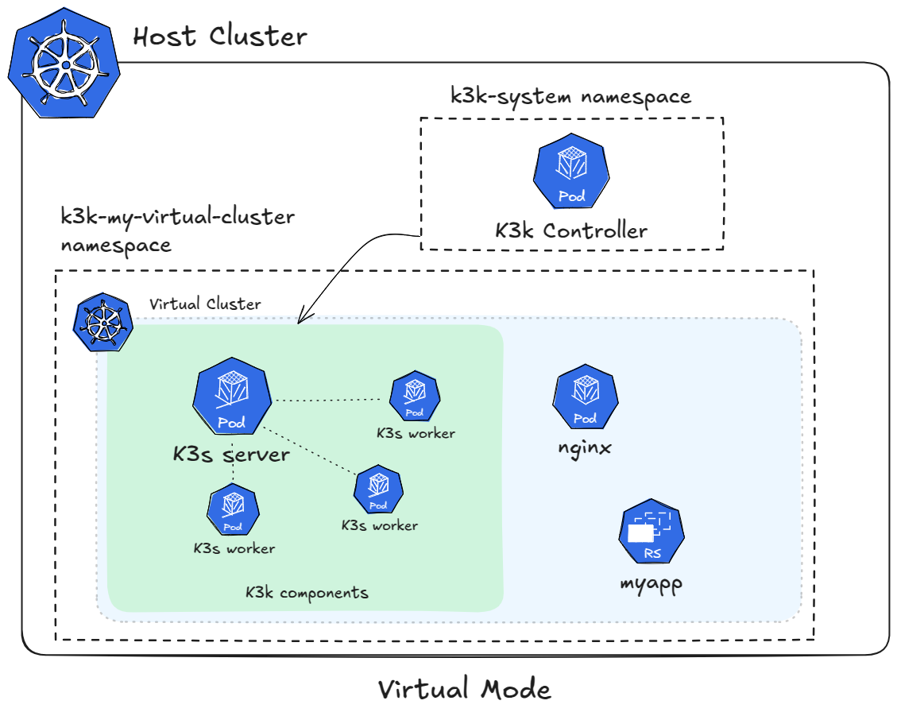

|
这是尚未发布的文档。 SUSE® Virtual Clusters v1.2.0 (Dev). |
体系结构
虚拟集群是部署在物理集群上的隔离Kubernetes集群。K3k利用K3s作为Kubernetes集群的控制平面，因为它的轻量级特性。
K3k提供两种部署虚拟集群的模式：- 共享（默认）- 虚拟
共享模式
默认的*共享*模式使用K3s服务器作为控制平面，并配置为 无代理服务器配置。启用此选项后，服务器不运行kubelet、容器运行时或CNI。该服务器使用特定于K3k的 虚拟Kubelet提供程序实现，调度工作负载和其他可能需要的资源到主集群上。这个K3k虚拟Kubelet提供程序处理共享主集群环境中的资源反映和工作负载执行。

资源共享和限制
在*共享*模式下，K3k利用Kubernetes的’资源配额’和’限制范围’来管理资源共享并强制执行限制。由于所有虚拟集群工作负载都在主集群的同一名称空间中运行，因此资源配额应用于该名称空间，以限制虚拟集群消耗的总资源。限制范围用于为Pods设置默认资源请求和限制，确保工作负载即使未明确指定也有合理的资源分配。
虚拟集群中的每个Pod都被分配一个唯一名称，该名称包含Pod名称、名称空间和集群名称。这可以防止在共享主集群的名称空间中发生命名冲突。
重要的是要理解，资源配额是在名称空间级别应用的。这意味着虚拟集群中的所有 Pod 共享相同的配额。虽然这为虚拟集群提供了整体限制，但这也意味着资源分配是动态的。如果一个工作负载没有使用其全部资源分配，_同一_虚拟集群中的其他工作负载可以利用这些资源，即使它们属于不同的部署或服务。
这种动态共享既可以是一个好处，也可以是一个挑战。它允许高效的资源利用，但如果工作负载的资源需求各不相同，也可能导致不可预测的性能。此外，这种方法使得在同一虚拟集群内保证严格的资源隔离变得困难。
| GPU 资源共享是一个正在持续研究的领域。K3k 正在积极探索该领域的潜在解决方案。 |
隔离与安全性
共享模式下虚拟集群之间的隔离在很大程度上依赖于 Kubernetes 网络策略。网络策略定义了控制允许进出 Pod 的网络流量的规则。K3k 配置网络策略，以确保一个虚拟集群中的 Pod 不能与其他虚拟集群中的 Pod 或主集群中的 Pod 进行通信，为网络隔离提供了坚实的基础。
虽然网络策略提供了强大的隔离能力，但理解其特性是很重要的：
-
*CNI 集成：*网络策略与支持的 CNI 插件无缝集成。K3k 利用这种集成来强制执行网络隔离。
-
*细粒度控制：*网络策略提供了对网络流量的细粒度控制，允许精细调整安全策略。
-
*可伸缩性：*网络策略能够很好地扩展虚拟集群和应用程序的数量，确保随着环境的增长保持一致的隔离。
K3k 还利用 Kubernetes Pod 安全准入（PSA）根据 Pod 安全标准（PSS）在虚拟集群内强制执行安全策略。PSS 为 pods 定义不同的安全级别，限制 pods 可以执行的操作。通过配置 PSA 强制执行特定的 PSS 级别（例如，baseline 或 restricted）以用于虚拟集群，K3k 确保 pods 遵循既定的安全最佳实践，并防止它们使用特权功能或执行潜在危险的操作。
PSA 集成的关键方面包括：
-
*名称空间级别强制执行：*PSA 配置在名称空间级别应用，为虚拟集群内的所有 pods 提供一致的安全态势。
-
*标准化控制文件：*PSS 提供一套与行业最佳实践对齐的预定义安全控制文件，简化安全配置并确保基本的安全水平。
共享模式架构在设计时考虑了安全性。K3k 采用多层安全控制，包括网络策略和 PSA，以保护虚拟集群和主集群。虽然共享名称空间模型需要仔细配置和管理，但这些控制为在多租户环境中运行工作负载提供了强大的安全基础。K3k 不断评估和增强其安全机制，以应对不断变化的威胁，并确保为用户提供最高级别的保护。
虚拟模式
K3k 中的 virtual 模式部署完全功能的 K3s 集群（包括服务器和代理组件）作为虚拟集群。这些 K3s 集群作为 pods 在主集群内运行。每个虚拟集群都有自己的专用 K3s 服务器和一个或多个作为工作节点的 K3s 代理。这种方法提供了强大的隔离，因为每个虚拟集群独立运行，拥有自己的控制平面和工作节点。虽然这些虚拟集群作为 pods 在主集群上运行，但它们作为完整且独立的 Kubernetes 环境运作。

网络和存储
在 virtual 模式下的虚拟集群各自拥有独立的网络配置，由各自的 K3s 服务器管理。每个虚拟集群运行自己的 CNI 插件，在其 K3s 服务器中配置，提供与其他虚拟集群和主集群的完全网络隔离。虽然虚拟集群网络最终在主集群的网络基础设施上运行，但网络配置和流量管理是完全独立的。
资源共享和限制
在 virtual 模式下，资源共享通过对构成虚拟集群的 pods（包括 K3s 服务器 pod 和 K3s 代理 pods）施加资源限制来管理。每个 pod 被分配特定数量的处理器、内存和其他资源。在虚拟集群 内 运行的工作负载则利用这些分配的资源。这意味着虚拟集群整体上有一个由其组成 pods 的限制决定的资源池。
这种方法提供了一种清晰直接的方式来控制每个虚拟集群可用的资源。然而，这需要仔细的资源规划，以确保每个虚拟集群有足够的容量来处理其工作负载。
隔离与安全性
virtual 模式由于为每个虚拟集群部署了专用的 K3s 集群，因此提供了强大的隔离。由于每个虚拟集群运行自己的独立控制平面和工作节点，工作负载在彼此之间以及与主集群之间有效隔离。这种架构最小化了一个虚拟集群对其他虚拟集群或主集群的影响风险。
在 virtual 模式下，安全性受益于由独立的 K3s 集群提供的固有隔离。然而，标准的 Kubernetes 安全最佳实践仍然适用，K3k 强调分层安全的方法。虽然 K3s 服务器 pods 通常以提升的权限运行（由于其功能的性质，需要访问系统资源），但 K3k 建议尽可能减少这些权限，并遵循最小权限原则。这可以通过仔细配置必要的能力来实现，而不是依赖于完整的 privileged 模式。有关 K3s 安全最佳实践的更多信息可以在官方 K3s 文档中找到： https://docs.k3s.io/security（此链接提供一般安全指导，包括对能力和其他相关主题的讨论）。
目前，虚拟模式下的安全性存在特权升级的风险，因为服务器 pods 由于其功能的性质以提升的权限运行，需要访问系统资源。
K3k 组件
K3k 由两个主要组件构成：
-
*控制器：*K3k 控制器是一个在主集群上运行的核心组件。它监视
Cluster自定义资源 (CR) 并管理虚拟集群的生命周期。当创建新的ClusterCR 时，控制器会提供必要的资源，包括名称空间、K3s 服务器和代理 Pod，以及网络配置，以创建虚拟集群。 -
*CLI:*K3k CLI 提供了与 K3k 交互的命令行界面。它允许用户轻松创建、管理和访问虚拟集群。CLI 简化了常见任务，例如创建
ClusterCR、检索 kubeconfig 以访问虚拟集群，以及执行其他管理操作。
VirtualClusterPolicy
K3k 引入了 VirtualClusterPolicy 自定义资源，这是一种设置和应用常见配置以及虚拟集群在 K3k 环境中如何操作的方法。
VCP 的主要目标是允许管理员集中管理和应用一致的策略。这减少了重复配置，帮助满足组织标准，并增强了 K3k 管理的虚拟集群的安全性和操作一致性。
VirtualClusterPolicy 绑定到一个或多个 Kubernetes 名称空间。一旦绑定，VCP 中定义的规则适用于在该名称空间中运行或创建的所有 K3k 虚拟集群。这允许灵活的策略应用，意味着不同的名称空间可以使用自己独特的 VCP，而其他名称空间可以共享一个 VCP 以实现一致的设置。
管理员利用 VirtualClusterPolicy 的常见用例包括：
-
为虚拟集群定义操作模式（如 "共享" 或 "虚拟"）。
-
设置资源配额和限制范围，以有效管理虚拟集群及其工作负载可以使用的资源量。
-
强制执行安全标准，例如，通过为名称空间配置 Pod 安全准入 (PSA) 标签。
K3k 控制器主动监视 VirtualClusterPolicy 资源及其相应的名称空间绑定。当应用或更新 VCP 时，控制器确保在目标名称空间内相关虚拟集群及其关联资源上强制执行定义的配置。
要深入了解 VirtualClusterPolicy 的功能及更多示例，请查看 VirtualClusterPolicy 概念 页面。有关所有规范字段的完整列表，请参见 VirtualClusterPolicy API 参考。
比较与权衡
K3k 提供两种不同的虚拟集群部署模式：shared 和 virtual。每种模式都有其自身的优缺点，最佳选择取决于用户的具体需求和优先事项。以下是一个比较，帮助您做出明智的决策：
| 功能 | 共享模式 | 虚拟模式 |
|---|---|---|
体系结构 |
无代理的 K3s 服务器与虚拟 Kubelet |
完整的 K3s 集群（服务器和代理）作为 Pods |
隔离 |
网络策略 |
专用控制平面和工作节点作为 Pods |
资源共享 |
动态的名称空间级别资源配额 |
虚拟集群 Pods 的资源限制 |
网络 |
主集群的 CNI + 主集群的 Ingress 控制器（可选） |
虚拟集群自己的 CNI + 虚拟集群自己的 Ingress 控制器 |
存储 |
主集群的存储 |
自带存储提供商 |
安全性 |
Pod 安全准入（PSA），网络策略 |
固有隔离，PSA，网络策略 |
性能 |
占用更小的资源，更高效，因为直接在主机上运行 |
由于运行完整的 K3s 集群而导致更高的开销 |
权衡:
-
隔离与开销:`shared`模式的开销较低，但隔离性较弱，而`virtual`模式提供更强的隔离性，但由于运行完整的 K3s 集群，可能会导致更高的开销。
-
资源共享:`shared`模式在一个名称空间内提供动态资源共享，这可能是高效的，但不太可预测。`virtual`模式为每个虚拟集群提供专用资源，提供更多控制，但需要仔细规划。
有关如何选择正确模式的更多信息，请参见选择模式.